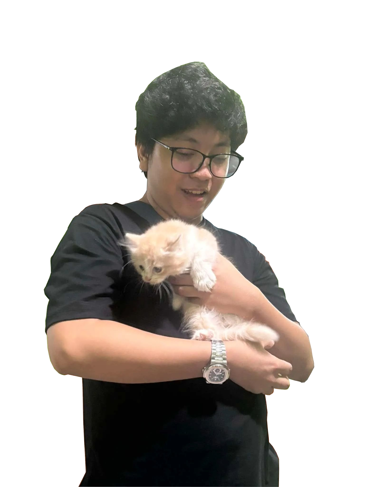

Kyle | Backend Developer

Previous Projects
LBnB - Postings for Accomodations (128 Project)
Java Pac-Man Game
Python-based Discord Bots
Skills
Proficient in multiple languages
(C, Java, Python, Webdev Languages)
Adaptable, Quick Learner
About Me
My name is Kyle Martin A. Villagen, a Batch 2018 student taking BS Computer Science in University of the Philippines Los Banos. I grew up in Labo, Camarines Norte and currently reside in a domitory near the campus. I have two pet dogs and recently adopted a pet cat (as seen from my photo) and I hope to become a succesful developer in the future. My current interests are web development and game development. I am mostly a backend developer but am able to provide simple but effective designs when need be. I like taking on novelty project like small applications e.g. bots for the social media platform Discord.